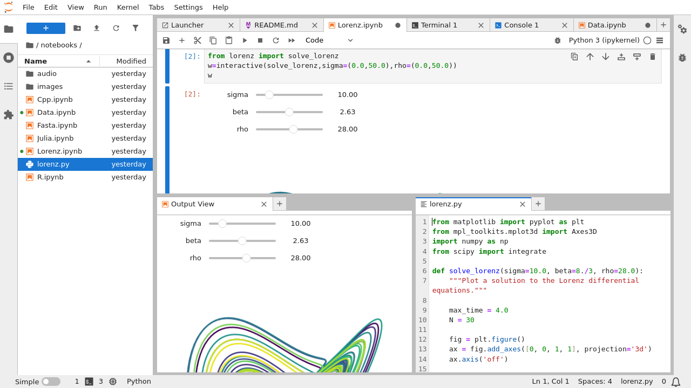

JupyterLab Documentation#
Welcome to the JupyterLab documentation site. JupyterLab is a highly extensible, feature-rich notebook authoring application and editing environment, and is a part of Project Jupyter, a large umbrella project centered around the goal of providing tools (and standards) for interactive computing with computational notebooks.
A computational notebook is a shareable document that combines computer code, plain language descriptions, data, rich visualizations like 3D models, charts, graphs and figures, and interactive controls. A notebook, along with an editor like JupyterLab, provides a fast interactive environment for prototyping and explaining code, exploring and visualizing data, and sharing ideas with others.
JupyterLab is a sibling to other notebook authoring applications under the Project Jupyter umbrella, like Jupyter Notebook and Jupyter Desktop. JupyterLab offers a more advanced, feature rich, customizable experience compared to Jupyter Notebook.
Try JupyterLab on Binder. JupyterLab follows the Jupyter Community Guides.
See the sections below (and the top-level links above) for more information about using, extending, and contributing to JupyterLab.
- Get Started
- User Guide
- Announcements
- The JupyterLab Interface
- JupyterLab URLs
- Working with Files
- Text Editor
- Notebooks
- Code Consoles
- Completer
- Terminals
- Managing Kernels and Terminals
- Commands
- Commands in Markdown Files
- Documents and Kernels
- File and Output Formats
- Debugger
- Table Of Contents
- Extensions
- Workspaces
- JupyterLab on JupyterHub
- Exporting Notebooks
- Localization and language
- Real Time Collaboration
- Language Server Protocol support
- Interface Customization
- Custom CSS
- Advanced Usage
- JupyterLab on Binder
- Develop Extensions
- Common Extension Points
- Reusing JupyterLab UI
- Documents
- Notebook
- React
- User Interface Helpers
- Internationalization and Localization
- Identity
- Extension Tutorial
- Targeting Multiple Applications
- Extension Migration Guide
- Other resources
- Overview of Extensions
- Plugins
- Source Extensions
- Prebuilt Extensions
- Development workflow for source extensions
- Testing your extension
- Contribute
- General Guidelines for Contributing
- Languages, Tools and Processes
- Submitting a Pull Request Contribution
- Contributing from within the browser
- Setting up a local development environment
- Installing JupyterLab
- Internationalization
- Performance Testing
- Visual Regression and UI Tests
- Contributing to the debugger front-end
- Build and run the stand-alone examples
- Debugging in the Browser
- High level Architecture
- The NPM Packages
- Writing Documentation
- The Jupyter Server Extension
- Build Utilities
- Testing Changes to External Packages
- Keyboard Shortcuts
- Screenshots and Animations
- Notes
- Privacy policies